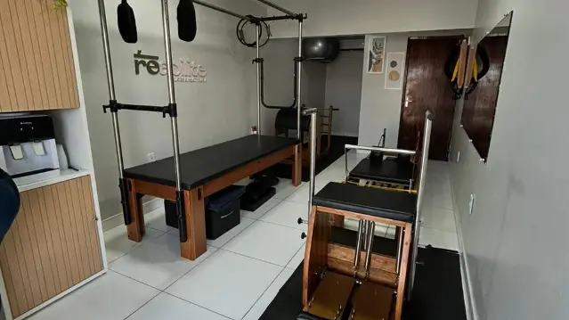

Pilates
Nosso espaço de aparelhos espera você. Consulte nossa equipe para conhecer as aulas e combinar seu horário.
Seu estúdio no Bairro dos Ipês
Reserve um tempo para você. Venha conhecer nosso Pilates e encontre um horário para começar.
Estamos na Av. José Jardim, 180, no Centro Empresarial MCM.

Conheça as modalidades que oferecemos. Fale com a gente para conversar sobre participação, acompanhamento e disponibilidade.
Nosso espaço de aparelhos espera você. Consulte nossa equipe para conhecer as aulas e combinar seu horário.
Converse com a gente sobre a modalidade e os atendimentos disponíveis no estúdio.
Saiba como funciona essa proposta dentro da nossa programação de Pilates.
Procura Pilates durante a gestação? Consulte a equipe sobre a participação e o acompanhamento.

Preparamos nosso estúdio para receber você no Bairro dos Ipês, em João Pessoa. Conheça os aparelhos e converse com a gente sobre o cuidado que procura.
Antes da sua visita, combine um horário pelo nosso WhatsApp.
Acompanhe nosso InstagramNossa equipe está aqui para conversar com você.
Agendar pelo WhatsAppFale com a gente pelo WhatsApp. Conte o que você procura e consulte os horários disponíveis antes de vir.
Converse com nossa equipe para conhecer as opções de atendimento e os valores atuais.
Sim. Entre em contato para organizar sua visita e receber as informações sobre o atendimento que procura.